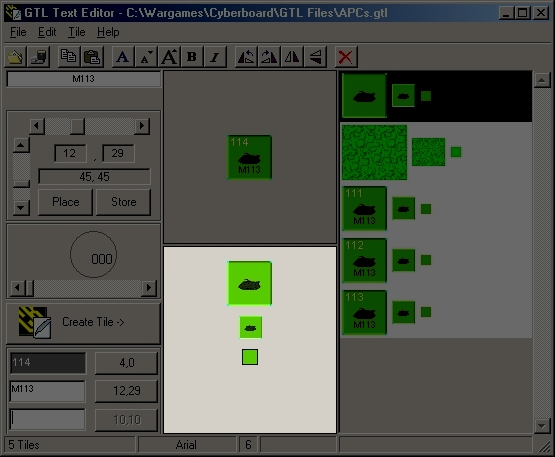

The use of the Preview Tile Area is only necessary if you need to add text to the half size tile image or change the color of the small tile.

Adding text to the halfsize tile image:
Changing the color of the small tile: